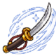
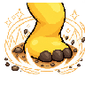

主角六技能素材预览
新奶流-拔刀拔刀架势居合反击白色气流居合斩光
SKL-N01 · 主角动作与特效分组 · 右向
奶龙大笑
捧腹大笑起手大笑循环狂击红粒子击杀恢复
SKL-N02 · 主角动作与特效分组 · 右向
王从天降
持锤跃起下砸落地碎石冲击晕眩星环
SKL-N03 · 主角动作与特效分组 · 右向

奶之毅力单脚踏地稳定收势忍耐白光减伤受击
SKL-N04 · 主角动作与特效分组 · 右向
虚式-奶
蓄力推手释放巨大光球光球爆炸
SKL-N05 · 主角动作与特效分组 · 右向
奶法之源
拍地施法起身收势蓝色法阵奥术蓝粒子
SKL-N06 · 主角动作与特效分组 · 右向